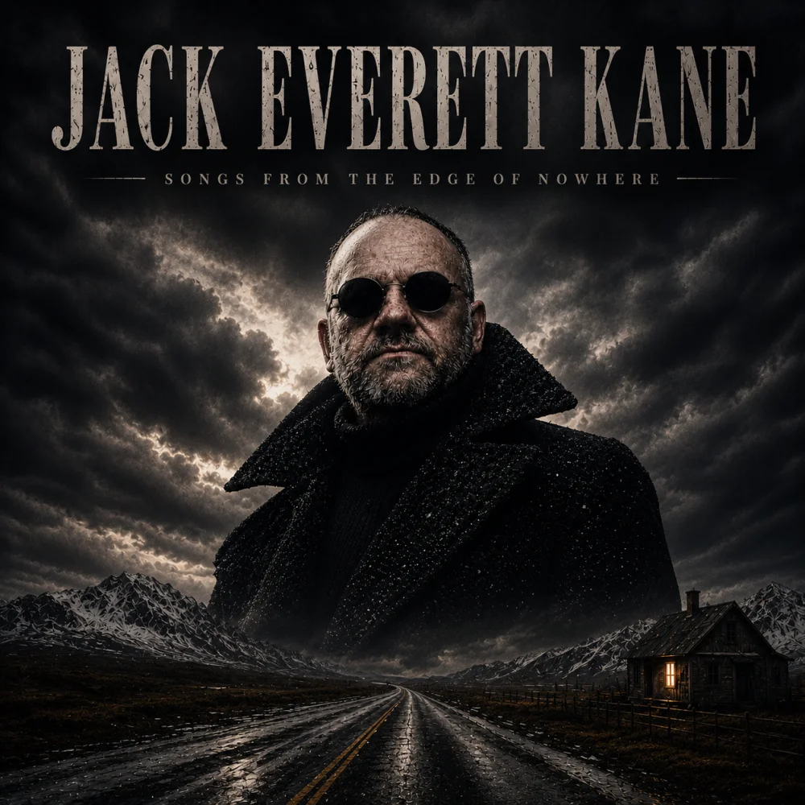

Embers of the Alley Crown
From A Soul Walks Home at Midnight
Southern Gothic · Dark Americana · Cinematic Folk
“Songs with stories. Stories with scars.”

Discography
Click a cover to open the tracklist and listen right here.
Music Videos
From A Soul Walks Home at Midnight

From Songs from the Edge of Nowhere
About Jack
Jack Everett Kane is a storyteller first and a musician second.
Rooted in Southern Gothic, dark Americana and cinematic folk, his songs explore the lives of warriors, rebels, lovers, outlaws and forgotten souls. From ancient battlefields to dusty backroads, every song is built around a story — sometimes historical, sometimes fictional, but always human.
With a deep baritone voice, haunting acoustic guitars and a raw, atmospheric sound, Jack Everett Kane creates music for those who like their songs dark, emotional and full of meaning.
Here you'll find original songs, music videos and stories inspired by history, legends, love, loss, courage and the choices that define us.
New stories are always waiting to be told.
Songs with stories. Stories with scars.